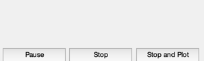
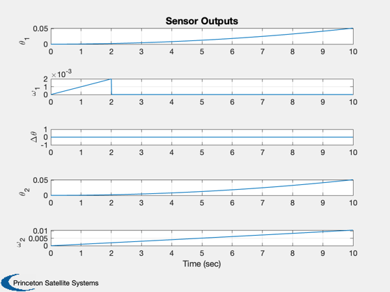
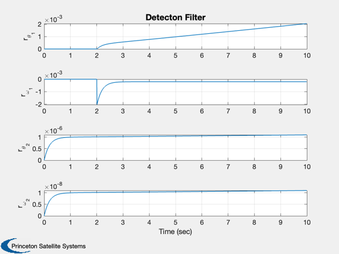
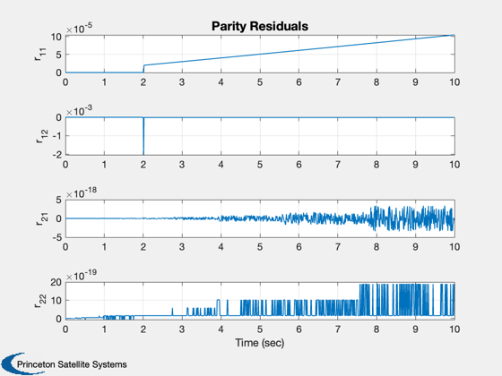

Simulates 2 DC Motors with failure detection logic.
------------------------------------------------------------------------
See also C2DZOH, Plot2D, TimeGUI, TimeLabl, RK4,
DCMotorDetectionFilter, DCMotorFailures, DCMotorParitySpace
------------------------------------------------------------------------
Contents
Global for the time GUI
global simulationAction
simulationAction = ' ';
clear q;
The control sampling period and the simulation integration time step
dT = 0.01;
Number of sim steps
nSim = 1000;
Plotting arrays
xPlot = zeros(13,nSim);
Initial conditions
x = [0;0;0;0];
t = 0;
d = struct('r',[100 100]);
d.kT = [0.01 0.01];
d.b = [0.001 0.001];
d.j = [0.1 0.1];
d.beta = -(d.kT.^2/d.r + d.b)./d.j;
d.alpha = d.kT./(d.j.*d.r);
Failure
noise = 'no_noise';
type = 'tach';
tFail = 2;
if( strcmp( type, 'beta' ) )
failure = 'motor 1 beta';
pFail = d.beta(1)*0.98;
else
failure = 'motor 1 omega';
pFail = 0;
end
Noise
if( strcmp( noise, 'no_noise' ) )
sigma = 0;
else
sigma = 1e-8;
end
Measurement matrix
c = [1 0 0 0;...
0 1 0 0;...
1 0 -1 0;...
0 0 1 0;...
0 0 0 1];
Initialize the time display
ratioRealTime = 0;
tToGoMem.lastJD = 0;
tToGoMem.lastStepsDone = 0;
tToGoMem.kAve = 0;
ratioRealTime = 0;
[ ratioRealTime, tToGoMem ] = TimeGUI( nSim, 0, tToGoMem, 0, dT, 'Dual Motor Sim' );
d.v = [1;1];
alpha = d.alpha';
beta = d.beta';
alpha0 = alpha;
beta0 = beta;
gain = 0.995;
tau = 0.2;
xDF{1} = [0;0];
xDF{2} = [0;0];
[plant{1}.a, plant{1}.b] = C2DZOH( [0 1;0 -beta0(1)], [0;alpha0(1)], dT );
[plant{2}.a, plant{2}.b] = C2DZOH( [0 1;0 -beta0(2)], [0;alpha0(2)], dT );
plant{1}.c = eye(2);
plant{2}.c = eye(2);
q{1}.uS = [0;0];
q{1}.yS = [0;0;0;0];
q{2} = q{1};
r = {};
p = {};

Run the simulation
for k = 1:nSim
y = c*x + sigma*randn(5,1);
[r{1}, xDF{1}] = DCMotorDetectionFilter( y(1:2), d.v(1), dT, xDF{1}, alpha0(1), beta0(1), tau );
[r{2}, xDF{2}] = DCMotorDetectionFilter( y(4:5), d.v(2), dT, xDF{2}, alpha0(2), beta0(2), tau );
[p{1}, q{1}] = DCMotorParitySpace( y(1:2), d.v(1), dT, plant{1}, q{1} );
[p{2}, q{2}] = DCMotorParitySpace( y(4:5), d.v(2), dT, plant{2}, q{2} );
xPlot(:,k) = [y;r{1};r{2};p{1};p{2}];
d.v = [1;1];
[c, d] = DCMotorFailures( failure, t, dT, c, d, tFail, pFail );
[ ratioRealTime, tToGoMem ] = TimeGUI( nSim, k, tToGoMem, ratioRealTime, dT);
x = RK4('DualDCMotors',x,dT,t,d);
t = t + dT;
switch simulationAction
case 'pause'
pause
simulationAction = ' ';
case 'stop'
return;
case 'plot'
break;
end
end
TimeGUI( 'close' )
xPlot = xPlot(:,1:k);
[t,tL] = TimeLabl( (0:(k-1))*dT );
Plot2D( t, xPlot(1:5,:),tL,{'\theta_1' '\omega_1' '\Delta\theta','\theta_2' '\omega_2'},'Sensor Outputs')
Plot2D( t, xPlot(6:9,:),tL,{'r_{\theta_1}', 'r_{\omega_1}' 'r_{\theta_2}', 'r_{\omega_2}'},'Detecton Filter')
Plot2D( t, xPlot(10:13,:),tL,{'r_{11}', 'r_{12}' 'r_{21}', 'r_{22}'},'Parity Residuals')
  